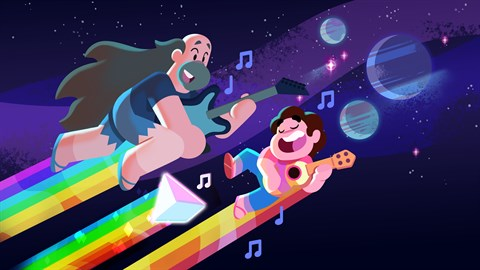

About Steven
Steven is great! He is a human/alien hybrid. His mother was the Pink Quartz, one of the rulers of his home planet. And his dad was an awesome rock'n'roller from earth!
Steven and his dad
Steven's Characteristics
- Has superpowers
- Has a pink lion with superpowers
- Has magic weapons that come out of his belly button!
Steven's Friends
Steven has a beautiful friendship with all of the Crystal Gems. ALthough they've had differeces with each other, they are all lovely and get together just fine! These are some of his best friends: